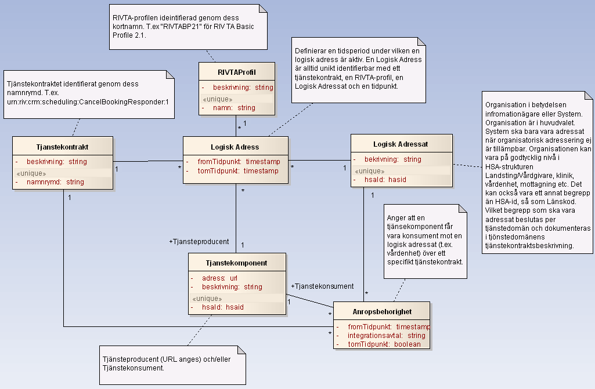

infrastructure: itintegration: registry
2 - draft
infrastructure: itintegration: registry - Local Development build (v2) built by the FHIR (HL7® FHIR® Standard) Build Tools. See the Directory of published versions
Här beskrivs de meddelandemodeller som tjänstekontrakten bygger på.
Tjänstekontrakten i denna tjänstedomän speglar T-bokens tjänsteadresseringsmodell. En tjänsteproducent ska hantera tjänsteadresseringsinformation på ett sätt som speglar följande informationsmodell:

I v2.0 av tjänstekontraktet är informationsmodellen utökad med ny behörighetsinformation kallade behörighetsfilter. Dessa kan användas för att begränsa anropsbehörighet baserat på innehållet i inkommande meddelande, dvs i begäran (request). Se beskrivning av tjänsten GetLogicalAddresseesByServiceContract för regelverk för behörighetsfilter. Första brukare av denna information är Engagemangsindex i syfte att bara anropa tjänsteproducenter av tjänsten ProcessNotification då notifieringen innehåller information som matchar tjänsteproducentens filter.| Klass | Beskrivning | Kodverk |
|---|---|---|
| RIVTAProfil | RIVTA-Profil. Namnges med aktuell profils kortnamn (se kodverk). | Definieras av RIVTA-förvaltningen. Dokumenteras på av förvaltningen anvisad plats. När denna text skrevs förvaltas RIVTA av Cehis tekniska expertgrupp på projektplatsen http://code.google.com/p/rivta/ |
| Tjänstekontrakt | Tjänstekontraktets namnrymd enligt tjänsteschema. Namnrymden omfattar både tjänstedomän och tjänstens namn. | Uppbyggnaden av namnrymd definieras av anvisning för Tjänsteschema (del av RIV TA). / Tjänstedomänen fastställs av RIVTA-förvaltningen. |
| Logisk adressat | Konceptet definieras av T-boken. Identifierare och innebörd beslutas per tjänstedomän och dokumenteras i respektive tjänstedomäns tjänstekontraktsbeskrivning. | |
| Tjänste-komponent | Ett begrepp för en mjukvarukomponent som driftsätts i syfte att publicera en tjänstekomponent eller att konsumera en tjänst. Multiplicitet och regler för attributen beror av roll (konsument/producent). | Kodverk saknas på nationell nivå. Landsting och leverantörer har olika angreppssätt för namnsättning och katalogisering av komponenter i sitt systemlandskap. |
| Anrops-behörighet | En relationsklass som bygger upp en behörighet för en tjänstekonsument (Tjänstekomponent i rollen konsument) att anropa en tjänsteproducent genom att den associeras till en Logisk Adressat (t.ex. en vårdenhet) och ett Tjänstekontrakt (t.ex. ”urn:riv:crm:scheduling:MakeBookingResponder:1”. Behörigheten är löst kopplad till tjänsteproducenten. En vårdenhet som erbjuder direktbokning via Mina Vårdkontakter kan därmed byta tjänsteproducent (bokningssystem) utan att anropsbehörigheten påverkas. | |
| Logisk adress | En relationsklass som beskriver en addresserbar tjänst. En adresserbar tjänst har ett Tjänstekontrakt som tillgängliggörs av en Logisk Adressat (en verksamhet) genom dess tjänsteproducent (Tjänstekomponent i rollen tjänsteproducent) enligt en viss RIVTA-profil. |
Personidentitet anges på formatet ÅÅÅÅMMDD-XXXX. Samma format gäller för olika typer av personidentiteter (reservnummer mm), dvs 8 siffror, bindestreck samt 4 siffror.
Datum anges alltid på formatet ”ÅÅÅÅ-MM-DD”. Exempel: 2010-11-26
Tid och datum anges alltid på formatet ”ÅÅÅÅ-MM-DDThh:mm:ss”. Exempel: 2010-11-26T09:12:33
Tidszon anges inte i meddelandeformaten. All information om datum och tidpunkter som utbyts via tjänsterna ska ange datum och tidpunkter i den tidszon som gäller/gällde i Sverige vid den tidpunkt som respektive datum- eller tidpunktsfält bär information om. Såväl tjänstekonsumenter som tjänsteproducenter skall med andra ord förutsätta att datum och tidpunkter som utbyts är i tidszonerna CET (svensk normaltid) respektive CEST (svensk normaltid med justering för sommartid).